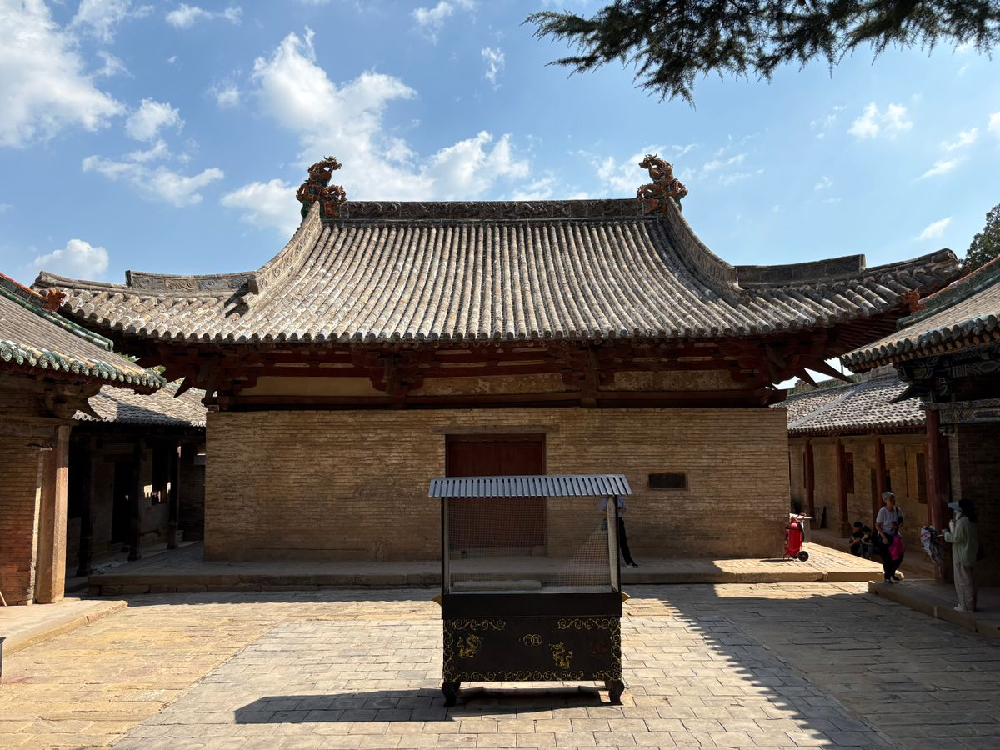
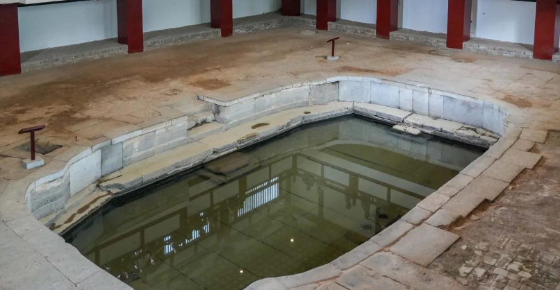
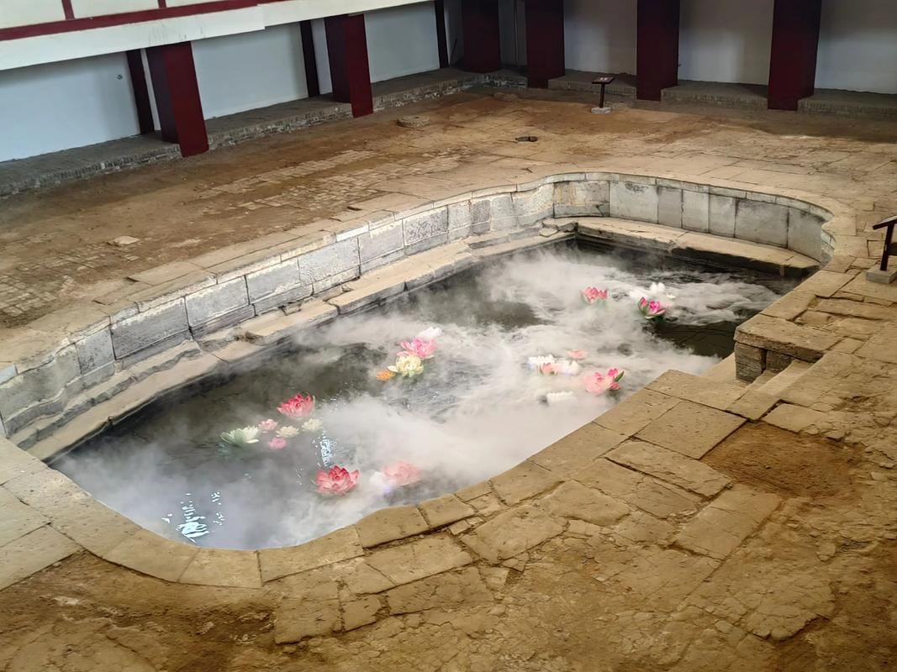
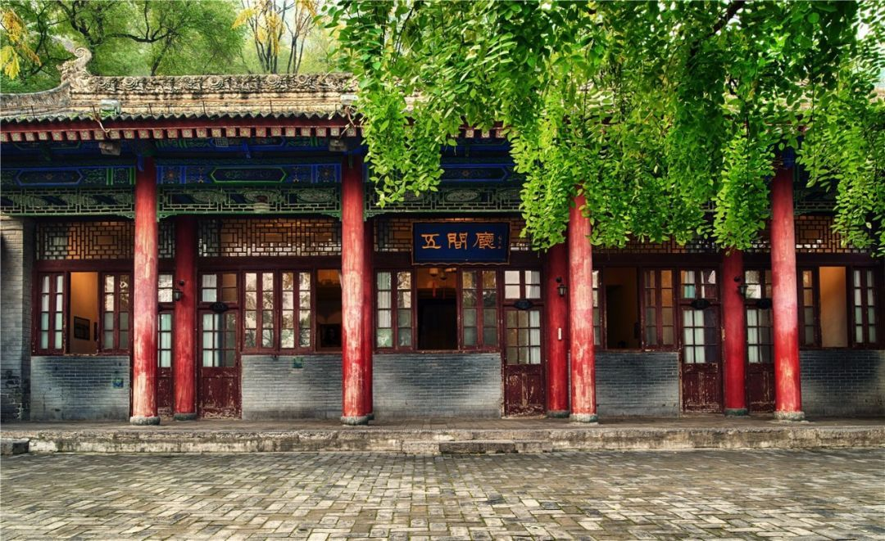
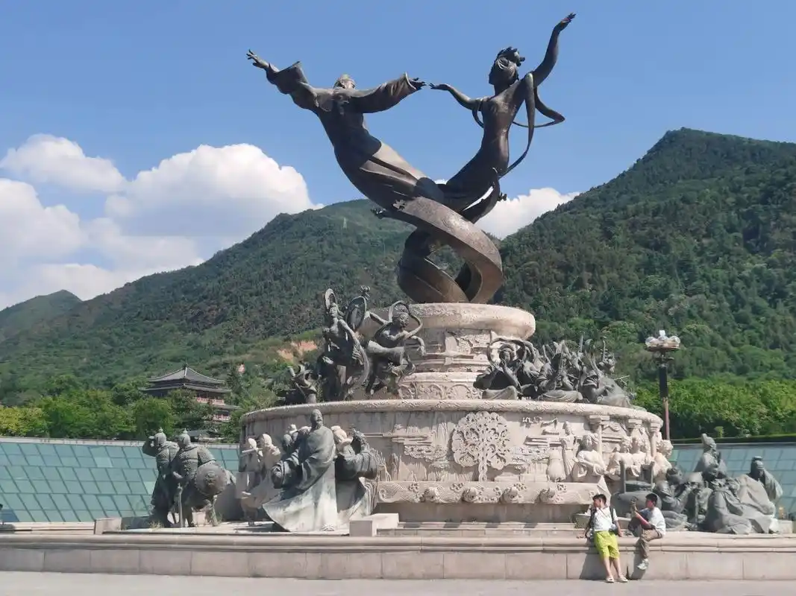
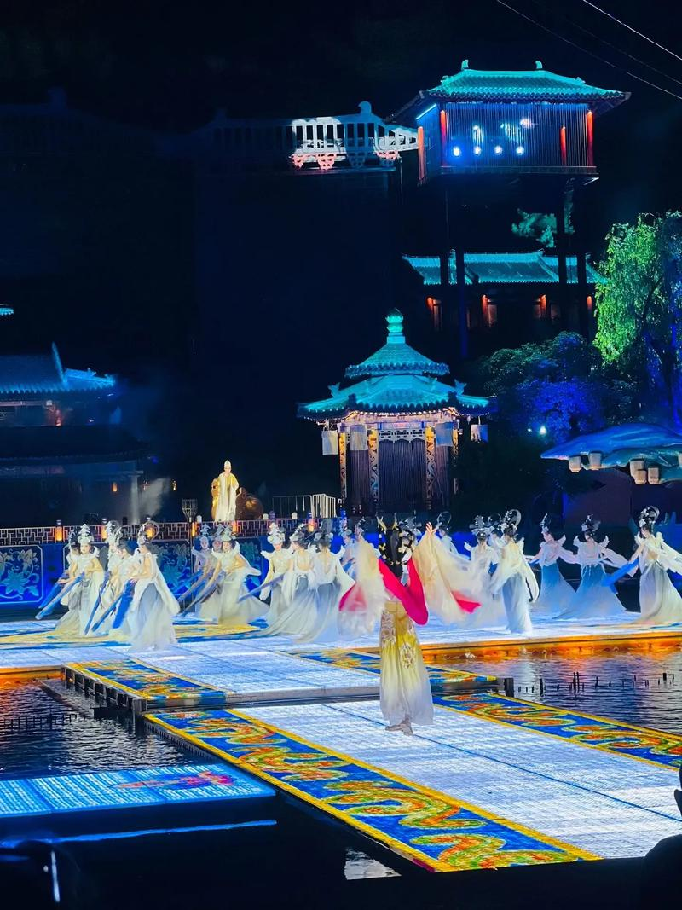

华清宫位于西安市临潼区骊山北麓，是中国最古老的皇家温泉园林之一，其历史可追溯至西周时期——周幽王曾在此修建"骊宫"。秦始皇时在此"砌石起宇"，名"骊山汤"。汉武帝时扩建为"汉离宫"。但真正让华清宫名垂千古的，是唐玄宗李隆基。
唐玄宗天宝年间（742—756年），李隆基下令大规模扩建骊山行宫，改名"华清宫"，取"温泉滑水洗凝脂"之意。每年十月至次年三月，唐玄宗携杨贵妃来此避寒，朝政也随之移至华清宫处理。"春寒赐浴华清池，温泉水滑洗凝脂"——白居易《长恨歌》中的千古名句，描写的正是杨贵妃在此沐浴的场景。华清宫也因此成为李杨爱情故事最著名的见证地。

骊山温泉是华清宫的灵魂。泉水出自骊山断裂带，常年恒温43℃，富含碳酸钙、硫酸钠、氯化物等多种矿物质，对风湿、关节炎等疾病有显著疗效。宫内至今保留着唐代的"莲花汤"（又名御汤，唐玄宗专用）、"海棠汤"（杨贵妃专用，因池形似海棠花而得名）、"星辰汤"等皇家汤池遗址，将一千多年前的沐浴文化凝固在了石砌的池壁之间。
华清宫承载了两段截然不同的历史记忆。在天宝盛世的华美宫阙之下，还隐秘地发生了改变中国近代史走向的重大事件——西安事变。
1936年12月，蒋介石下榻华清宫"五间厅"督战"剿共"。12月12日凌晨，张学良、杨虎城发动兵谏，东北军部队冲入华清宫，蒋介石仓皇翻墙逃上骊山，藏身于山腰一处石缝中，最终被搜山士兵发现扣押。这就是震惊中外的"西安事变"。如今五间厅的玻璃窗上仍保留着当年的弹孔，骊山山腰建有"兵谏亭"以纪念这一事件。
一座华清宫，串起了中国历史上最浪漫的爱情与最惊心的转折。温泉的水汽中，既有盛唐的歌舞升平，也有近代的枪声硝烟。
"春寒赐浴华清池，温泉水滑洗凝脂。侍儿扶起娇无力，始是新承恩泽时。" —— 白居易《长恨歌》




| 地址 | 西安市临潼区华清路38号（骊山北麓） |
|---|---|
| 开放时间 | 07:00 — 18:00（旺季）；07:30 — 17:30（淡季） |
| 门票 | 120 元（成人）/ 60 元（学生） |
| 交通 | 火车站东广场乘游5（306路）公交直达；或地铁9号线华清池站 |
| 小贴士 | 华清宫与兵马俑在同一条公交线上，可安排一日同游；晚上有大型实景舞剧《长恨歌》表演（需另购票），以骊山为背景极为震撼 |